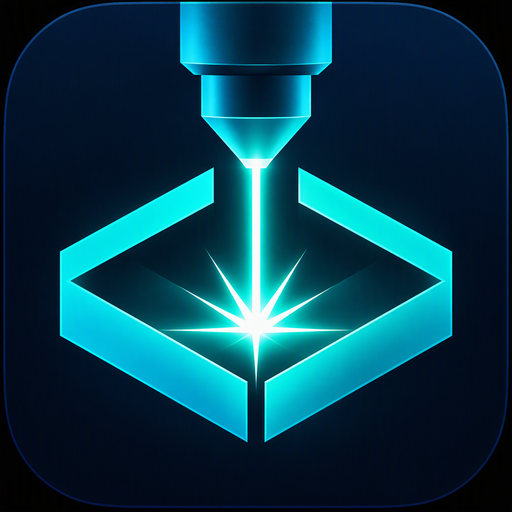
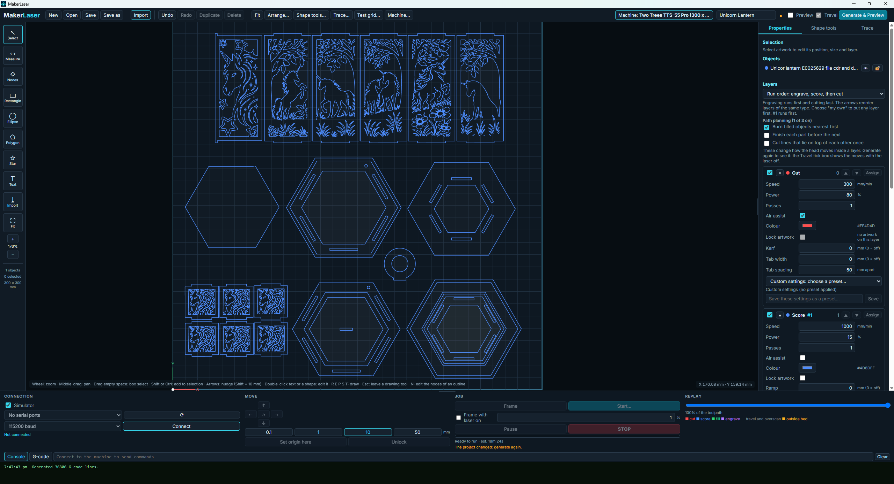

◇
Design
Shapes, text, exact dimensions, node editing, Boolean operations, offsets, fillets, chamfers and arrays directly on the canvas.
VECTOR
MakerLaserOPEN-SOURCE LASER CAD + CAM
MakerLaser brings vector design, image processing, job preparation and GRBL laser control together in one straightforward application.

C:\Dev\makerlaser-hero.pngTHE WORKSPACE
MakerLaser combines everyday design tools with practical laser CAM and machine control.
Shapes, text, exact dimensions, node editing, Boolean operations, offsets, fillets, chamfers and arrays directly on the canvas.
VECTORLogo, Photo and Detailed tracing plus dithering, grayscale and quantized-power raster engraving with live processing controls.
IMAGECut, Score, Fill and Image layers with speed, power, passes, kerf, overscan, material presets, test grids and cut tabs.
CAMKeep holes before outer boundaries, reduce travel, finish parts together and optionally remove overlapping shared cuts.
PATHGenerate before running. Inspect cut order, travel, out-of-bed warnings, predicted runtime and replay the planned job.
CHECKConnect over USB, jog, frame, set work origin and stream GRBL jobs with pause, resume, progress and a persistent STOP control.
GRBLMAKER WORKFLOW
Start with SVG, DXF, an image, text, or geometry made directly in MakerLaser.
Use direct canvas editing, nodes, dimensions and shape tools to make the project fit.
Choose Cut, Score, Fill or Image and set the actual machine parameters.
Preview the toolpath, frame the material and send the checked job to the controller.
WHY MAKERLASER?
// practical priorities direct_editing = true open_source = true subscription = false real_machine_tests = true efficient_cam = true
EARLY TESTERS WANTED
MakerLaser is already producing real jobs, but broader hardware testing is more useful now than another unchecked feature. Try it and report where the workflow or machine support gets in the way.